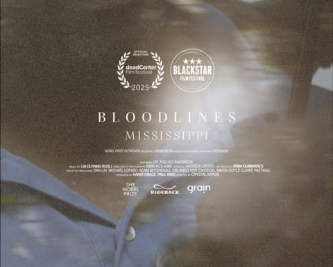

Screening event · Double Exposure 2025
Short Strand 2: DX Reel South Award Shorts
Friday, October 31, 2025 · 1:15 PM · Martin Luther King Jr. Memorial Library
Audience talkback with Enrique Pedráza-Botero, Crystal Kayiza and Nick Price of Reel South, moderated by Benjamin Duchek.
Films discussed
 No se ve desde acá (You Can't See It From Here)Enrique Pedráza-Botero2025 · 20 min
No se ve desde acá (You Can't See It From Here)Enrique Pedráza-Botero2025 · 20 min
Bloodlines, MississippiCrystal Kayiza2025 · 20 min Boil That Cabbage DownCandace Williamson2025 · 25 min
Boil That Cabbage DownCandace Williamson2025 · 25 min